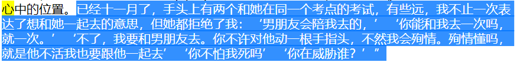
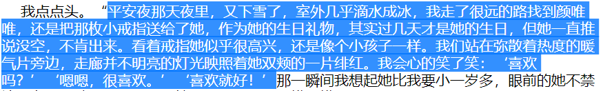
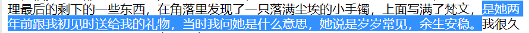

主人翁：王箬依
颜唯唯：是一个渣女无疑。她花言巧语，玩弄感情，善于搞暧昧，以至于将王箬依骗进她鱼塘的偷心贼。
听故事的人：高云寒，可以说是疗伤者。
首先我觉得主人翁王箬依是很不幸的，经历过两段感情的重伤；其次我觉得王箬依是一个用情专一，爱的热烈的傻姑娘，但她又是一个好姑娘。我觉得对自己心爱的人过度的占有欲和控制欲，是人之本性，也是用情专一的一个必备品质，爱到深处自然自私。
文章中的故事是从主人翁王箬依，在与黛西的第一段感情中受伤，此时王箬依内心满目疮痍，颜唯唯闯进了王箬依的生活开始的。在第一段感情的受伤中，跟颜唯唯的一次长聊，让王箬依受伤的内心感受到了一点点温暖，可就是这样的第一次见面的长聊，在外人看来是多么的普通和善意，我们生活中也经常有这样的一些小确幸的事情常发生。但故事接下来，就是颜唯唯以太温暖太美好的话语和关心，让王箬依对她动情了。在这样情况下，我想很少有人不会动情，特别是当一个人处在低谷的时候，当陌生人或者身边的朋友投来帮助和温暖，确实让人感动和感激。我觉得这时的王箬依的内心应该可以慢慢恢复正常的生活，不至于整天活在阴霾中。
而此时，至于王箬依在颜唯唯的关心中，是否对颜唯唯产生爱恋的心理，我觉得这是因人而异的，哪怕此时产生了爱恋的心理，我觉得也是正常的，他也可能更多是一种感激的心理，对突如其来这段时间温暖自己，帮助自己走出阴霾的颜唯唯产生好感和感恩。但，在王箬依曾多次告诉颜唯唯自己好喜欢她的时候，可是颜唯唯不以为然。可能当时颜唯唯不知道怎么回答王箬依，甚至担心她直接拒绝可能会让刚恢复正常生活的王箬依再次伤心，所以颜唯唯选择了不以为然。但是如果王箬依是很多次告诉颜唯唯，自己喜欢她的时候，颜唯唯还是必以为然的话，那就可以说明颜唯唯有点渣的本质，这是为后文埋下伏笔。
但是在种种迹象之中都表现，王箬依与颜唯唯的性格上的不和，但最后王箬依依旧沉湎于一半现实一半幻想的美好世界之中，久久不肯让自己清醒。这可见王箬依是个傻姑娘，好不容易从上一个阴霾中走出来了，又让自己活在一半现实一半幻想的世界中。
直到那年暑假，王箬依忽然不能联系到颜唯唯，王箬依在夜里经常失眠，白天没有任何精神。这是一个人对自己心爱的人产生暗恋时的表现。说明这时候王箬依正式是爱上了颜唯唯，但此时只是王箬依一厢情愿的暗恋！
话锋一转，“离不开他”？？我想知道这段时间，颜唯唯对王箬依耍了什么手段，让王箬依渐渐离不开她，并如此痴迷。可见暴露了颜唯唯就是偷心贼，玩弄感情的渣女本质。同时也表现出王箬依的不成熟和懦弱，喜欢一个人到这个地步了，还是一厢情愿的暗恋，我觉得这不应该，当一个人渐渐对一个人的爱恋产生了依赖，这时必须要给自己一个名分和确信的交代，确认双方是否都愿意朝着恋人的方向继续发展感情。
开学之后的这次谈话，再次表现了王箬依的不成熟和懦弱。对一个人的爱恋不是一个人霸占过来的，是相互交流磨合达成一致的。王箬依只是表明自己不接受颜唯唯有男朋友，但也没有直接表明自己已经爱恋上了她，问她是否接受同性之类的话。无赖地只好自己承受胸口的剧痛，悲痛只好自己默默承受。这可显幼稚和荒唐。其实这并不是过度的占有欲和控制欲，而是对感情的曲解，不管是男男还是男女、女女，以及双性恋，恋爱是双方的事，不是一个的霸占。
故事从头至尾，都没有王箬依对自己爱恋的颜唯唯进行表白，他们也没正面正式的来直视这个问题，颜唯唯甚至还回避甚至搞暧昧，王箬依也没有鼓起勇气去追求自己爱恋的对象，导致自己再一次闷头受伤，导致自己抑郁成疾
当王箬依渐渐发觉很多时候颜唯唯跟自己交流会出现一些分歧，但自己有非常需要得到颜唯唯的爱，在这种情况下王箬依却没有找到正确的方法去追求自己想要的爱，甚至她也曾去追求过，可能颜唯唯给她的答复是，他们之间只是普通朋友的关系，迫于种种结果，让王箬依追求无果，但王箬依又不愿意接受颜唯唯已经有男朋友的事实，只好经常精神恍惚聊以自慰，痛苦不堪。我觉得到目前为止，问题的根源在于王箬依的不成熟不理智，以及错把友谊当做爱恋，甚至超越了友情的边界，想要达到占为己有的爱恋关系之中。并且对于可知的结果，并不接受，抱有很强的侥幸心理。
这一段完全是自己一厢情愿的内心戏，错把友情当爱情。朋友跟恋人，真的有很大的区别，我觉得恋人之间首先的是忠诚，忠于爱情至死不渝，然后才是占有，占有对方为己所有，不允许对方再去沾花惹草。但，从文章来看从始至终王箬依依旧还是单相恋，至于王箬依为什么会这样，这就是颜唯唯手段高明的地方，一直能扎住王箬依的心，却从不直面回答王箬依对她的喜欢，一直给她希望又让她失望。王箬依这是受了多少苦啊，真心为她心痛和同情。
爱的热烈且痴迷的姑娘，王箬依
爱的深沉，毕竟一厢情愿爱过，总要在岁月里留下一些痕迹，始终不死心。为下文的见面埋下伏笔。
哎，专情的女人，王箬依

这狗血的剧情，我无力说什么好了。。。。。
这句我喜欢，写的好！喜欢一个人就是这样。哈哈哈哈

这。。。卧槽 真是狗血，上一秒颜唯唯还说男朋友是找人假扮的，回去哭了一夜，又让王箬依一点重生的希望，噗噗噗~真的狗血，现在又来了说“男朋友会陪我去”。。。去TMD颜唯唯，手法极其高超。王箬依寄希望又大跌失望，真傻是个傻姑娘。
真是狗血，上一秒颜唯唯还说男朋友是找人假扮的，回去哭了一夜，又让王箬依一点重生的希望，噗噗噗~真的狗血，现在又来了说“男朋友会陪我去”。。。去TMD颜唯唯，手法极其高超。王箬依寄希望又大跌失望，真傻是个傻姑娘。
我哭辽，真为王箬依感到心痛，这个情节写的好，揪心又充满气愤。
无论在外面兜兜转转，遭遇什么挫折，家里父母才是你最坚实的后盾和最温暖的港湾。文章加入了亲情元素，更能打动读者，让读者产生共鸣。
呸、 狗血。就短短的备考两个月，王箬依，你就好了伤疤忘了疼？？？ 哎····真傻的可怜，下面等到颜唯唯说‘我跟男朋友在一起’，王箬依你又得揪心了，又戳你痛处了。
可这时王箬依想到她以前给颜唯唯买的生日礼物、糖葫芦、炸鸡、奶茶等东西的时候，颜唯唯吃的时候明明是高兴的。我想说普通朋友之间就不能做这些事情吗？你的普通朋友好心给你买的吃的，你能不高兴吗？最起码，朋友的面子要给吧，所以从这可以看出到头来一直是主人翁王箬依的一厢情愿罢了。

平安夜里，颜唯唯欣然接受王箬依送的戒指这个礼物，并表示喜欢。接受礼物之后，就玩消失，这可让痴情的王箬依内心不好受。从这里可见，颜唯唯的无耻和绝顶无情，她根本对戒指这种礼物的无知，以及在圣诞节这样的特殊节日无感，也不知道她在圣诞节这天跟她口口声声提及的“男朋友”，是怎么浪漫度过的！
此时此刻，虽然王箬依没有明确说出口，希望跟颜唯唯成为恋人关系，但在圣诞节送戒指这种种举动，足以表明自己的想法。作为一个正常人，应该能明白，这些举动已经越过了做朋友的底线，达到了成为恋人的标准了，但，此时颜唯唯依旧欣然接受，此后又说出了“你可以给我送生日礼物，他不能陪我过生日吗？”这样的话，可想而知颜唯唯真的是杀人诛心，绝顶无情，一直玩弄暧昧，持续对王箬依造成伤害。再次让王箬依痛苦

呵，还是搞暧昧
剧情反转起伏，真是狗血。颜唯唯手段高明，王箬依又傻又痴情。此时引起我的一点思考：我认为成为恋人的前提，肯定会有一方首先去追求另一方（排除一见钟情的），在暗恋阶段，如果哪一方一直没有及时给出相应的回应，确实会引起追求方的心里难受。如果长期没有结果，该反思是不是自己追求的方式不对？暗恋真的不应该一直藏在心底，至少要发出一些明确的信号，让对方知道自己正在被追求，直到最后挑明坦白了之后，才决定是否往恋人的方向发展，才将对方占为己有。就像婚姻为什么需要有婚礼呢？我个人觉得这是一项仪式，是一项向亲朋好友宣告，对面这个人从今以后就是我的私有财产，为我占有。而一开始就不明确恋人跟朋友关系的边界在哪里，这样最容易一方爱的热烈又痛苦，另一方全然无知。所以说，放过自己也放过他人。对于剧情中她花言巧语，玩弄感情，善于搞暧昧的偷心贼颜唯唯真是让人厌恶。
文章叙事细腻，人物刻画生动，故事引人入胜，让读者能感受到里面主人翁的心情和处境。
通过人物之间的对话，真是一边揭开伤疤，一边通过倾听者云寒哥来疗伤。让读者产生共鸣！
希望作者继续创作，顶你！